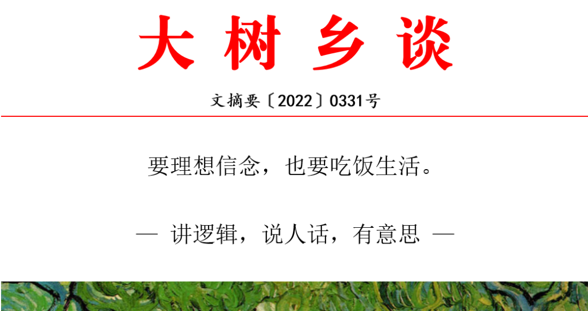

中央部委公务员的待遇与发展

最近国考面试陆续进行，也收到一些读者朋友留言询问，不外乎待遇、发展等问题。在当前经济不太景气、就业较为困难的时候，体制内确实能给更多安全感，而中央部委公务员也的确有一些特殊。 在小镇看来，对普通人来说，无论什么岗位首先都要考虑个人和家庭生活的问题，不是什么人都适合成为中央部委公务员。这些年，小镇也亲眼见过一些人因为错误信息、脸面或者周围人看法等影响，选择了这条路，虽然不能说错误，但终归有些遗憾。 所以干脆写一篇，如实介绍下中央部委公务员的整体情况，也谈一下小镇的一些看法。
如果有志于成为中央部委公务员，可以参考一下，少一些幻想、多一些现实，这说不定更有利于个人的发展。 坦率、真实地讲讲收入、住房、教育、医疗以及退休金、晋升等等。虽然不涉密，但也不太适合大肆传播，还是要有些限制，大家自取所需吧。